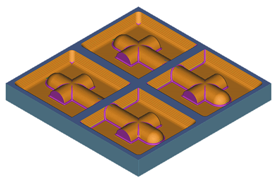

Use dynamic material removal to visualize the tool path for the entire program, then compare the in-process workpiece to the part.
In the Operation Navigator, select PROGRAM.
On the Operations toolbar, click Verify Tool Path .
In the Tool Path Visualization dialog box, click the 2D Dynamic tab.
Click Play .
Click Compare.
Notice that the scallops have been removed from the top of the part.

Click Cancel.
Close the part without saving it.